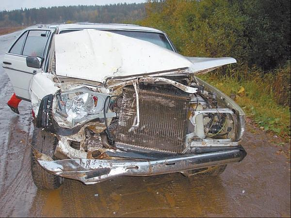

К чему приводит вождение в нетрезвом виде.
Уж сколько раз твердили миру: алкоголь – главный и самый опасный враг водителя, который часто становится причиной тяжелейших дорожно-транспортных происшествий. Однако число погибших по причине вождения в нетрезвом виде с годами не только не уменьшается, но и имеет опасную тенденцию к росту (рис. 1.11). Поэтому мы еще раз остановимся на этой актуальнейшей проблеме и расскажем о том, о чем практически не говорится в автошколах (как правило, преподаватели касаются этой темы вскользь).

Рис. 1.11. Вождение в нетрезвом виде – источник многих бед и несчастий
В соответствии с действующим Кодексом Российской Федерации об административных правонарушениях управление транспортным средством в состоянии опьянения, равно как и передача управления транспортным средством лицу, находящемуся в состоянии опьянения, влечет наложение наказания в виде лишения водительских прав сроком от 1,5 до 2 лет. Отказ от медицинского освидетельствования на состояние опьянения лицом, лишенным права управления либо не имеющим права управления, карается административным арестом на срок до 15 суток, а тот, к кому данная мера неприменима (беременные женщины, инвалиды и др.), наказывается штрафом в размере 5000 рублей.
Следует особо остановиться на таком аспекте, как употребление водителем спиртных напитков сразу после остановки транспортного средства сотрудником автоинспекции. Не секрет, что многие выпивохи, которых остановил инспектор в тот момент, когда они управляли автомобилем в нетрезвом виде, прибегали к хитрости: едва остановившись, они сразу употребляли спиртное. Далее следовала такая отговорка: мол, за рулем я был трезвый, а выпил только после того как меня остановил инспектор, исключительно для снятия стресса. В такой ситуации ГИБДД не имела юридических оснований для привлечения виновного к ответственности, даже при наличии результата медицинского освидетельствования, подтверждающего нетрезвое состояние водителя, поскольку последний официально заявлял о том, что принял спиртное только после остановки транспортного средства.
Однако в новой редакции Кодекса об административных нарушениях предусмотрена ответственность за употребление алкоголя и наркотических средств после ДТП или остановки водителя автоинспекцией до прохождения медицинского освидетельствования на опьянение. Сейчас за подобную «хитрость» водитель сразу лишается прав на полтора-два года.
Кстати, санкции за управление механическим транспортным средством в состоянии опьянения отличаются суровостью во многих странах мира. Это неудивительно – такие водители слишком опасны, и еще полбеды, если бы эта опасность распространялась только на них. Однако любители выпить за рулем рискуют жизнью и здоровьем других участников дорожного движения.
Не первый год многие законодатели говорят о том, что за управление автомобилем в состоянии опьянения следует не только лишать прав, но и конфисковывать транспортное средство, на котором было совершено данное правонарушение, либо как минимум арестовывать его на продолжительный срок (например, на год). При этом все расходы по хранению автомобиля на штрафной стоянке следовало бы взыскивать с виновного. Строго, но справедливо.
Данные статистики дорожно-транспортных происшествий неумолимо свидетельствуют: пятая часть всех аварий, виновниками которых являлись водители механических транспортных средств, в той или иной степени связана с принятием алкоголя. Около 40 % водителей, которые погибли в результате ДТП, находились в состоянии опьянения, а у тех, кто выжил в аварии, тяжесть последствий в полтора раза выше, чем у их трезвых товарищей по несчастью.
Даже после принятия небольшого количества алкоголя многократно возрастает вероятность водительской ошибки, в первую очередь по причине переоценки возможностей как своих, так и автомобиля. Появляется авантюрное и совершенно необоснованное желание рискнуть там, где в трезвом виде и в голову не пришло бы.
Да и вообще, начальная стадия алкогольного опьянения характеризуется тем, что человек ощущает небывалый прилив сил, у него пропадает усталость, а действия становятся более быстрыми, создается впечатление, что он способен горы свернуть. Это подкрепляется тем, что человек не обнаруживает в себе ничего такого, что могло бы убедить его в обратном. Чувствует он себя прекрасно, настроение тоже на подъеме. Однако алкоголь ведь в первую очередь влияет не на способность человека двигаться (это происходит уже позже и при более сильном опьянении), а на его умение адекватно оценивать ситуацию и принимать правильные решения – и это исключительно важно для любого водителя. На следующей стадии опьянения человек теряет возможность своевременно распознавать опасность и воспринимать ее всерьез. Далее сильно снижается острота зрения, теряется концентрация, водитель становится невнимательным и слабо реагирует на происходящее.
Самыми распространенными ошибками, которые допускают нетрезвые водители, являются жесткое переключение передач, резкое маневрирование, резкое ускорение либо торможение, неравномерная работа педалью газа, несоблюдение синхронности использования педалей газа и сцепления (в результате чего автомобиль «дергается») и др.
Кстати, как показывают результаты проведенных исследований, основная часть водителей, которые управляли автомобилем в нетрезвом состоянии, вовсе не являются хроническими пьяницами. Оказывается, «принимают на грудь» они лишь изредка, и то, что они совершают данное правонарушение, говорит лишь о незнании ими влияния даже незначительных доз алкоголя на организм (в первую очередь, на мозг) человека.
В частности, широко распространено мнение, что алкоголь – это органическая часть питания, которая может служить даже его заменой. Нередко бывает, что человек выпивает, поддавшись на уговоры и рассказы о том, что плотная еда якобы ликвидирует вредное влияние алкоголя. Некоторые с самым серьезным видом пытаются рассказывать об устранении влияния алкоголя с помощью крепкого кофе, чая, нашатырного спирта. Стоит ли говорить, что подобные разговоры не имеют под собой никаких оснований?
Научно доказано: алкоголь оказывает чрезвычайно пагубное воздействие на способности водителя управлять автомобилем. Поэтому не испытывайте судьбу и не подвергайте опасности ни себя, ни других участников дорожного движения. Никогда не садитесь за руль в нетрезвом виде – можно сломать жизнь и себе, и другим, а в худшем случае – погибнуть и погубить своих пассажиров.